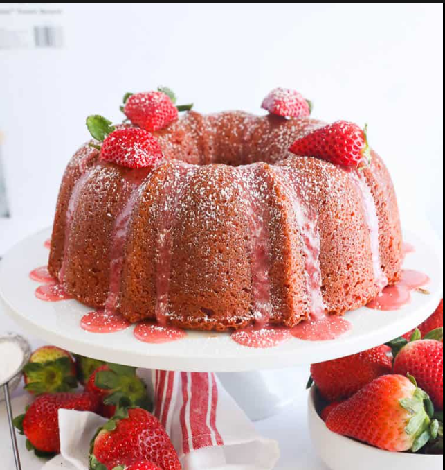

Strawberry pound cake is a really good dessert to try, especially if your favorite fruit is strawberries. It is also really fun and easy to make. By following these easy instructions, you can make a delicious cake to share with your family and friends!!
Photo credits to Immaculate bites